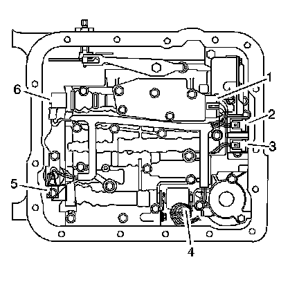
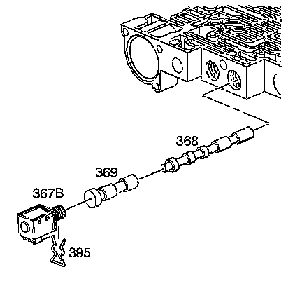
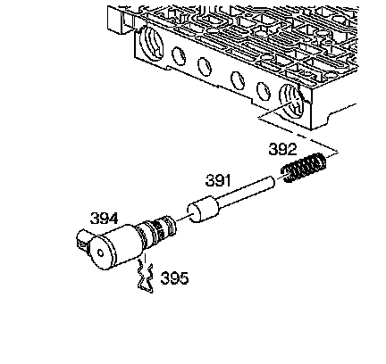

Clutch Control Solenoid Valve: Service and Repair
Control and Shift Solenoids Replacement
Removal Procedure

1. Remove the transmission filter.
Important: Removal of the 1-2 accumulator is necessary only if servicing the pressure control solenoid.
2. Remove the 1-2 accumulator, if necessary.
3. Disconnect the internal wiring harness electrical connectors from the following components:
^ Transmission fluid pressure switch (1)
^ 1-2 shift control solenoid (2)
^ 2-3 shift control solenoid (3)
^ Pressure control solenoid (4)
^ torque converter clutch pulse width modulation (TCC PWM) solenoid (5)
^ 3-2 control solenoid (6)

4. Remove the pressure control solenoid retainer bolt (364A) and retainer (378).
5. Remove the pressure control solenoid (377).

6. Remove the 1-2 shift solenoid retainer (395) and the 1-2 shift solenoid (367A).

7. Remove the 2-3 shift solenoid retainer (395) and the 2-3 shift solenoid (367A).

8. Remove the 3-2 control solenoid retainer (395) and the 3-2 control solenoid (394).
Installation Procedure
1. Install the 3-2 control solenoid (394) and the 3-2 control solenoid retainer (395).
2. Install the 2-3 shift solenoid (367A) and the 2-3 shift solenoid retainer (395).
3. Install the 1-2 shift solenoid (367A) and the 1-2 shift solenoid retainer (395).
Notice: Be sure all solenoids are installed with the electrical connectors facing the non-machined (cast) side of the valve body; otherwise, the solenoids will bind against the transmission case as the valve body bolts are tightened and damage may occur.
Important: When installing the pressure control solenoid, the electrical connector must be in the position 1 shown. Do not use position 2.
4. Install the pressure control solenoid (377).
Notice: Refer to Fastener Notice.
5. Install the pressure control solenoid retainer (378) and retainer bolt (364A).
Tighten the bolt to 11 N.m (97 lb in).
6. Connect the internal wiring harness electrical connectors to the following components:
^ Transmission fluid pressure switch (1)
^ 1-2 shift control solenoid (2)
^ 2-3 shift control solenoid (3)
^ Pressure control solenoid (4)
^ TCC PWM solenoid (5)
^ 3-2 control solenoid (6)
7. Install the 1-2 accumulator, if necessary.
8. Install the transmission filter.
Important: It is recommended that transmission adaptive pressure (TAP) information be reset.
Resetting the TAP values using a scan tool will erase all learned values in all cells. As a result, the engine control module (ECM), powertrain control module (PCM) or transmission control module (TCM) will need to relearn TAP values. Transmission performance may be affected as new TAP values are learned.
9. Reset the TAP values. Refer to Transmission Adaptive Functions (TCM).